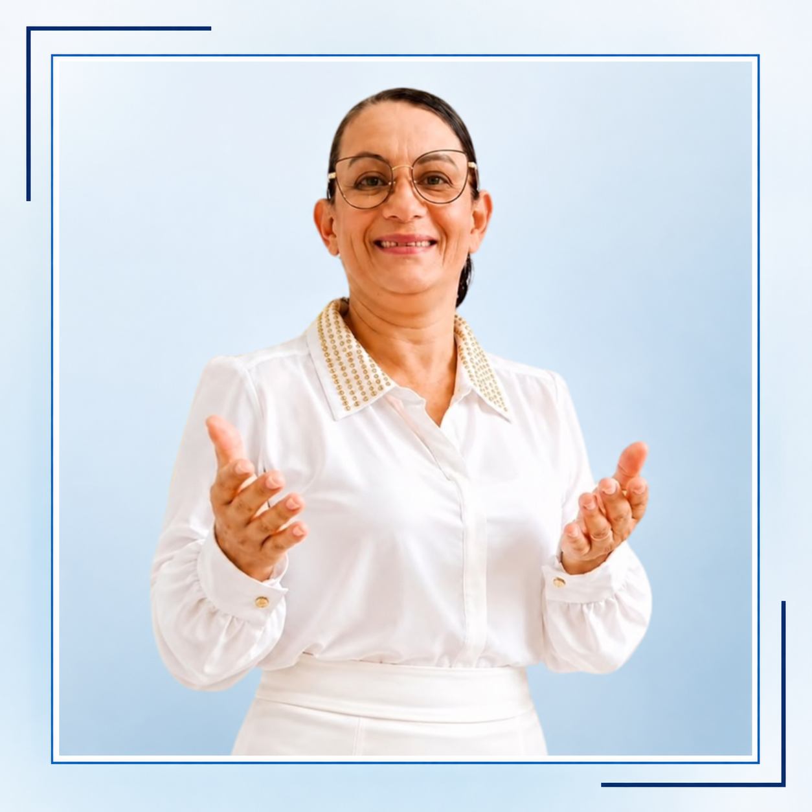

INÍCIO DO
MINISTÉRIO
Há 28 anos, uma entrega a Jesus Cristo que deu início a uma caminhada de fé.
QUEM É A APÓSTOLA?
Uma história de fé, cura, libertação e propósito.
Há 28 anos servindo a Jesus Cristo, com uma trajetória dedicada à Palavra de Deus e à transformação de vidas.
Seminários de Cura Interior, Libertação Sexual e Batalha Espiritual, presenciais e online.

MINHA HISTÓRIA, MEU CHAMADO
É uma alegria receber você aqui! Meu nome é Apóstola Patrícia Santana, e minha missão é conduzir pessoas à cura, à libertação e ao cumprimento do propósito de Deus para suas vidas.
Há 28 anos entreguei minha vida a Jesus Cristo e, desde então, tenho caminhado servindo ao Senhor com dedicação, fé e compromisso com a Sua Palavra. Ao longo dessa jornada, fui preparada para atuar no ministério de Cura Interior, Libertação Sexual e Batalha Espiritual.
Há 20 anos ministro na área de Libertação, auxiliando pessoas a romperem cadeias emocionais e espirituais, vencerem traumas, restaurarem sua identidade e viverem a plenitude que Deus preparou para elas.
Sou especialista em Batalha Espiritual de Alto Nível e ministro seminários de Cura Interior e Libertação, nas modalidades presencial e online, capacitando igrejas, líderes e todos aqueles que desejam experimentar uma transformação profunda em suas vidas.
“Minha missão é conduzir pessoas à cura, à libertação e ao cumprimento do propósito de Deus.”
UMA TRAJETÓRIA CONSTRUÍDA PELA FÉ
Há 28 anos, uma entrega a Jesus Cristo que deu início a uma caminhada de fé.
Uma jornada de dedicação à Palavra de Deus e ao ensino bíblico.
Seminários presenciais e online de Cura Interior e Libertação.
Há 20 anos, um ministério dedicado à Libertação e à restauração de vidas.
Compartilhando ensinamentos para fortalecer a fé e o propósito de Deus.
PILARES DO MINISTÉRIO
Conduzir pessoas à cura, à libertação e ao propósito de Deus.
Capacitar igrejas, líderes e pessoas por meio da Palavra de Deus.

Servir com fé e dedicação nos ministérios de Cura Interior e Libertação.
“Ensinar.
Libertar.
Curar.
Restaurar.”
UMA PALAVRA PARA VOCÊ
Neste espaço, você encontrará:
Minha oração é que cada mensagem publicada aqui fortaleça sua caminhada com Deus e desperte em você a esperança, a cura e a liberdade que somente Ele pode proporcionar.
Que esta página seja um instrumento de transformação para a sua vida.
Apóstola Patrícia SantanaAPROFUNDE SEU CONHECIMENTO
Conteúdos que edificam, aprofundam e fortalecem a caminhada espiritual.
VER TODOS OS SEMINÁRIOS →